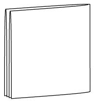

Задача 10.1. В диване юного энтомолога Васи живут клопы и блохи, всего 2019 насекомых. Вася подсчитал, что если бы количество клопов увеличилось в 2 раза, а количество блох уменьшилось на 100, то насекомых бы стало 2018. Сколько клопов и блох живет в диване у Васи?
Задача 10.2. Петя собрал пазл. Он посмотрел на него и решил его склеить и повесить на стену. За одну минуту Петя склеивал вместе два куска (начальных или ранее склеенных). В результате весь пазл соединился в одну цельную картину за 2 часа. За какое время собралась бы картина, если бы Петя склеивал вместе за минуту не по два, а по три куска?
 Задача 10.3.
Квадратную салфетку сложили пополам, полученный прямоугольник сложили пополам ещё раз. Получившийся квадратик разрезали ножницами по прямой. Могла ли салфетка распасться
а)
на 2 части;
б)
на 3 части;
в)
на 4 части;
г)
на 5 частей?
Задача 10.4. Можно ли квадратный лист бумаги размером 2 × 2 сложить так, чтобы его можно было разрезать на 4 квадрата 1 × 1 одним взмахом ножницами?
Задача 10.5. В Солнечном городе живут 25 коротышек. У каждого из них есть три воздушных шарика: красный, синий и желтый. Смогут ли они так поменяться шариками, чтобы у каждого все три шарика оказались одноцветными?
Задача 10.6. Вдоль аллеи стоят 20 столбиков, каждый из которых имеет высоту 1 м, 2 м или 3 м. Вася, пока шёл в одну сторону, насчитал 13 пар соседних столбиков, в которых первый столбик был ниже второго. Когда он шёл обратно, то насчитал 5 таких пар. Не ошибся ли Вася в расчётах?
Задача 10.7. Электрик, монтажник и инженер, фамилии которых Бауманн, Эйхлер и Хаан (не обязательно в таком порядке!), летели рейсом из Праги в Каир. Из разговора, который они вели в самолете, выяснилось, что: \beginitemize \item Хаан старше, чем инженер. \item Бауманн и инженер собирались работать на строительстве; \item электрик и Хаан живут постоянно в Берлине; \item Эйхлер моложе, чем монтажник; \enditemize Назовите фамилии инженера и электрика (ответ нужно обосновать!).
Задача 10.8. На доске написали в строку 25 чисел "-1". Каждым ходом какие-то два соседних числа заменяли на "1", если они имеют один и тот же знак, и на "-1", если они имеют разные знаки. После нескольких таких ходов на доске осталось одно число. Могло ли оно быть равно 1?
Дополнительные задачи

Задача 10.9. В городе Васюки каждая семья занимала отдельный дом. В один прекрасный день каждая семья переехала в дом, ранее занятый другой семьей. В ознаменование этого дня Васюксовет решил покрасить все дома в красный, синий или жёлтый цвета, причём так, чтобы ни для какой семьи цвета старого и нового домов не совпадали. Удастся ли Васюксовету это сделать?
Задача 10.10.
Имеется набор из двух карточек: \fbox\Large \mathbf 1 и \fbox\Large \mathbf 2. За одну операцию разрешается составить выражение, использующее числа на карточках, арифметические действия, скобки. Если его значение – целое неотрицательное число, то его выдают на новой карточке. (Например, имея карточки \fbox\Large \mathbf 3, \fbox\Large \mathbf 5 и \fbox\Large \mathbf 7, можно составить выражение \fbox\Large \mathbf 7 \fbox\Large \mathbf 5 : \fbox\Large \mathbf 3 и получить карточку \fbox\Large \mathbf 2\mathbf 5 или составить выражение \fbox\Large \mathbf 3\fbox\Large \mathbf 5 и получить карточку \fbox\Large \mathbf 3\mathbf 5.)
Как получить карточку с числом 2018
а)
за 4 операции;
б)
за 3 операции?
Задача 10.11. В какое наибольшее число цветов можно раскрасить шахматную доску 8 × 8 так, чтобы каждая клетка граничила по стороне хотя бы с двумя клетками своего цвета? (Каждая клетка закрашивается целиком в один цвет.)
Задача 10.12. На длинной скамейке сидели мальчик и девочка. К ним по одному подошли еще 20 детей, и каждый из них садился между какими-то двумя уже сидящими. Назовём девочку \it отважной, если она садилась между двумя соседними мальчиками, а мальчика – \it отважным, если он садился между двумя соседними девочками. Когда все сели, оказалось, что мальчики и девочки сидят на скамейке, чередуясь. Сколько из них были отважными?